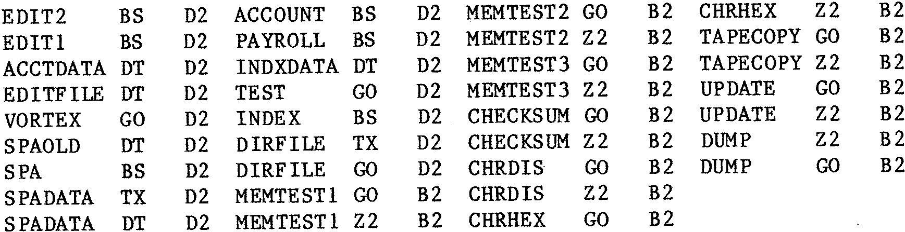
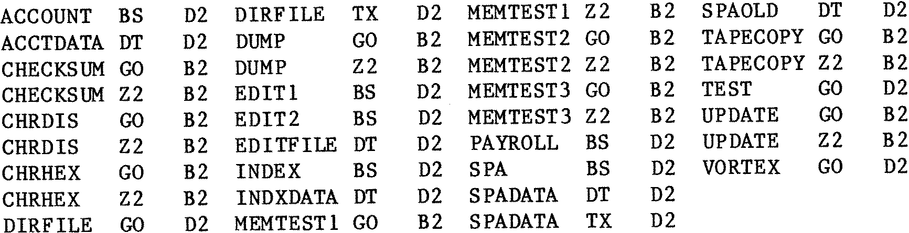
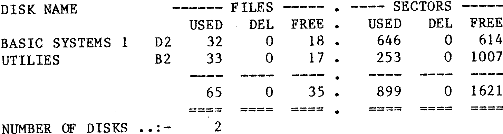

80-Bus News |
September–October 1984 · Volume 3 · Issue 5 |
| Page 38 of 47 |
|---|
This program is for making a listing on a printer of all the file names on a Gemini GM809/GM815 system with Polydos 2.0. The output consists of a listing of file names as they appear on the disks and a sorted list of file names, as well as a usage summary of all the user disks owned. For this to work properly the user must have some way of identifying his disks, I have decided to use the last two digits of the twenty digit disk name (see the FORMAT utility or the NAME command).
Another way of obtaining a list is to use the DIR;ELD command but this takes a long time for a large number of disks and does not give a sorted listing and a summary. With only a few disks it is quite easy to remember where things are kept, this becomes increasingly more difficult as the number of disks increases. (Also I have a remarkably bad memory).
The following is a sample output from running this program against two disks the first disk has an identifier D2 and the second B2:–
Disk Index Listing ==================
Disk Index Listing ==================
Disk Index Listing ==================
| Page 38 of 47 |
|---|